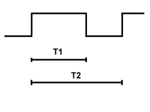

5040DB Check windscreen demister sensor operation
- Path
- Test > 50 AUXILIARY UNITS > 5040 AIR CONDITIONING CASING AND COMPONENTS > 5040D AIR CONDITIONING CONTROLS > 5040DB Check windscreen demister sensor operation
- Kind
- test / check procedure
- Applies to
- all engines; all production periods; only with equipment: Automatic climate control
- Interactive page
- https://sloeber94.github.io/elrnDB-aBrrSpdr/en/#/946001065
Applies to: all engines; all production periods
Using an Examiner set to the Voltmeter mode, select a 20 Volt full scale deflection and 5 seconds, connect the black probe to the vehicle earth and the red probe on pin 3 of the mist sensor output signal, turn the key on and press the START button.
The signal shown should be a set of PWM impulses with a frequency of 100 Hz and a Duty Cycle that varies between 10 and 90% as indicated in the table below.

1. earth
2. +15
3. not connected
4. signal output
PWM% Duty Cycle = T1 / T2 where:
- T1= duration of impulse
- T2 = 1/f = 1/100 Hz = Duratation of transmission
- T2 = 10msec ± 7%
PWM of 20% at 70%
This is the normal sensor operating range.
Within this range, the sensor supplies a PWM signal proportional to the amount of condensation present on the windscreen.
PWM = 10%
Indicates an internal sensor fault. This fault is defined as follows:
the sensor self-diagnosis detected an internal electrical problem.
PWM = 80%
This condition indicates a sensor limit condition. This is defined as follows:
The sensor optics are saturated due to too much direct sunlight.
The signal is transmitted as long as the limit condition described above persists.
PWM = 90%
This condition indicates a sensor limit condition or failure. It is defined as one of the following:
The sensor optics are saturated due to too much reflected energy. This may be due to a very high level of condensation or an object between the windscreen surface and the sensor.
The internal sensor temperature reached and exceeded 70°C. The internal processor is disabled to avoid damage. A fault signal is transmitted as long as the excess temperature persists.
PWM = 0 % and 100%
These two conditions will never be transmitted by the sensor.
Specific hardware faults may be interpreted by the receiving input stage as PWM signals or 0% or 100% due to the static nature of the signal (microcomputer that does not process or conditions of dc to +12V or GND or open circuits).
Messages transmitted by PWM
100% Sensor " off " or fault in communication or d.c. to +12 V
90% Sensor saturated or locked in excess temperature
80% Sensor faulty or subject to direct sunlight
70% Condensation intensity Max to moderate
60% Condensation intensity moderate to slight
50% Condensation intensity light to identifiable
40% Condensation intensity slightly visible
30% Condensation intensity not visible to the human eye
20% Windscreen clean - No condensation
10% Internal sensor fault.
0% Sensor " off " or fault in communication or d.c. to GND